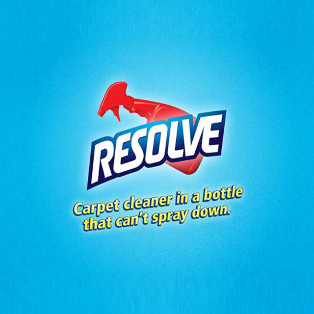

Wales Has Left The U.K.

WALES is not there anymore.
After a brutal morning of hefty winds, Britain woke up to discover that its western chunk had been sheered off and was now tossing in the north Atlantic, 150 miles off the coast of Iceland.
People in Herefordshire were first to realise the principality had been removed when they found themselves living on the coast.
Martin Bishop, from the village of Clifford, said: "At first I thought my house had been picked up and dumped next to the sea, like some sort of 'Wizard of Oz' fantasy that I'm always having.
"I said to my dog, 'we're not in Herefordshire anymore, Toto', but then I realised that Wales wasn't there.
Bishop's neighbour, Margaret Gerving, said: "It seems very traumatic at the moment, but it's for the best."
Jane Thompson, from Shrewsbury, added: "The A458 is now a road to nowhere. Sorry, the A458 is still a road to nowhere."
Meanwhile, the government said it was studying a range of options on what to do about Wales and would announce a decision sometime next year.


